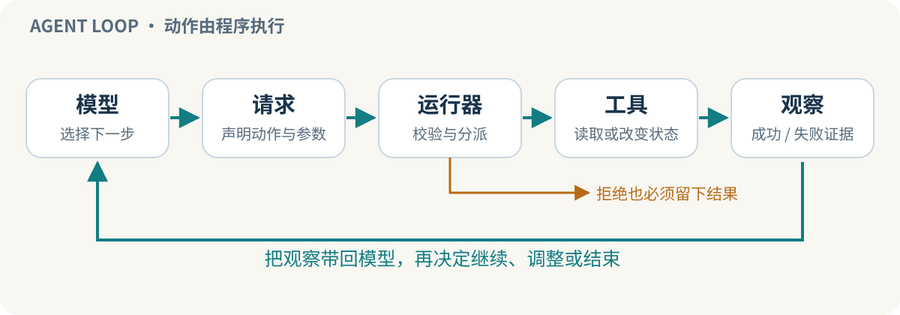
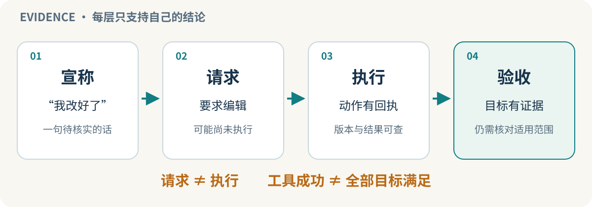
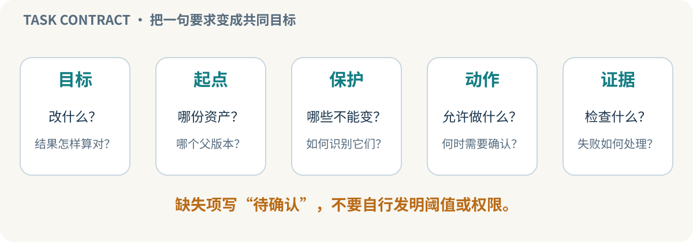

CS146S 项目式学习：从 3D 表面编辑理解可靠 Agent
版本：学习内容 v1.0，2026-11-01。以 CS146S Fall 2026 为知识主线，围绕抽象的 3D 表面编辑教学案例重新组织。这是个人项目辅导，不是官方课程镜像、官方作业或课程认证。
先看这页
我们要学会的不是让模型多写一些代码，而是让一次 Agent 工作有明确目标、正确上下文、受控动作和可信结果。
面向已有编程或科研经验、希望理解 Agent 工程的学习者。我们从一个最小问题出发：“Agent 说完成了，我凭什么相信？”随后把答案逐步扩展成项目可复用的开发方法。
主线案例是：在已有资产上完成局部上色，同时保护非目标区域，并交付可以重新打开、按真实采样方式检查的结果。这里的资产、颜色、日志和工具名称全部是教学示例，与任何真实项目代码、资产和实验记录分离。
怎么学
每节遵循相同节奏：
- 先回答一个项目问题。
- 理解少量核心概念。
- 看一个正例和一个失败例。
- 做不接触真实资产的小练习。
- 用明确标准判断是否掌握，再进入下一节。
建议每次学习 20–30 分钟，可自行调整，不是固定日程。前两节已经完整写出；后续六节是学习规划，未完成的内容不会标为已学习。材料可预读，学习进度应以实际回答和练习为准。
八节路线
- Agent loop 与证据链：区分模型宣称、工具请求、执行回执和验收。产出：一张任务证据表。对应课程 Week 1。
- 任务合同与上下文：把“涂好一点”变成目标、约束、输入版本和验收证据。产出：一页编辑任务合同。对应 Week 2 的 context / spec-driven 主题；合同形式为本辅导设计。
- CLI、MCP 与 Skills 各做什么：设计窄而清楚的工具动作，区分操作接口和操作方法。产出：一个工具输入/输出说明与一段操作流程。对应 Week 2–3。
- 外部状态、仓库说明与恢复：用当前接受版本标识、交付台账、配置文件帮助 Agent 接续；理解文档、hook 与权限边界的差别。产出：最小交接单。对应 Week 4–5。
- 测试与评审：把视觉“看起来对”拆成数值约束、真实消费端检查和人工判断。产出：失败反例与验收矩阵。对应 Week 5–6，并结合项目特点扩展。
- 安全与失败处理：区分不可信输入、授权范围、运行错误和任务失败；决定什么时候拒绝或交回人。产出：风险边界清单。对应 Week 7，具体教学内容待材料与项目需求核实。
- 多 Agent 协作与后台任务：研究、实现、质疑分工，单一写入者、版本绑定和异步结果回收。产出：一次有界任务的协作协议。对应 Week 8–9。
- 成本、模型路由与完整交付：把模型能力用在需要判断的地方，让确定性代码处理确定性检查。产出：一个从意图到验收的可审阅方案。对应 Week 10。
不是每学一节都要更改真实项目。首先做纸面分析和隔离练习；需要真实执行时，再沿项目原有授权与维护方式进行。
第 1 节：模型说“完成了”，究竟完成了什么？
本节目标：你能读一条 Agent 轨迹，指出哪一步只有意图、哪一步发生了状态变化、哪一步足以支持哪项结论。
入口问题：Agent 说“纹理已经改蓝”，但没有编辑工具执行记录。你会如何判断？最先核查哪两项证据？先记下自己的答案，再看下面内容。
1.1 一个 Agent loop 的最小结构
把 Agent 想成“会选择下一步的模型”，而不是模型本身直接伸手改文件。
- 模型看到任务、已有观察和可用工具说明，提出下一步动作或文字回答。
- **运行器（harness / runner）**接收请求，检查格式及适用的执行限制，调用真正的工具。
- 工具读文件、修改状态或返回失败，把结果交给运行器。
- 下一轮模型读到结果，再决定继续、换方法、提问或结束。
因此，模型输出一个工具名称，不等于工具已经执行；工具返回成功，也不等于用户的全部目标已经满足。
官方入门源码很适合看清这个边界：它将模型输出中的文本工具请求解析出来，再由 Python 分派给 read_file、list_files、edit_file，并把返回值放回对话。它是教学用的最小循环，不是完整商业 Agent，也没有因此自动获得可靠的沙箱、审批和任务验收能力。我们只读这个机制，不在真实项目直接运行该示例。

1.2 把“完成”分成四层
第一层：宣称。“我已经改好了。”这是需要证据支持的一句话。
**第二层：请求。**模型要求执行一次编辑。请求可能格式错误、等待批准、被拒绝或尚未调度。
**第三层：执行。**运行器和工具有可核对回执，说明某个动作对某个版本执行过。失败回执也是有用事实，不能被后续的成功措辞覆盖。
**第四层：验收。**对本次产物执行与用户目标对应的检查，明确支持和不支持哪些结论。
这不是四个永远线性推进的“勾选框”。执行后可以回滚，检查后可以再次修改，产物也可能被另一位 Agent 覆盖。证据必须绑定同一个资产、同一次操作和同一版本。

1.3 迁移到 3D 表面编辑案例
通用工程背景：多模型协作的编辑系统需要明确当前接受版本、操作记录、UV 对应、色彩空间和保护要求。本例只讨论这些通用概念，不描述任何真实项目的实现状态。
教学模拟：任务是“将玩偶衣服目标区域改蓝，毛皮和背带保持不变”。以下只是便于理解的逻辑步骤，不是现有工具 API。
- 模型提出对目标区域上色。
- 工具返回“候选纹理已生成，父版本为 A，候选版本为 B”。这支持“产生了 B”，不支持“保护区域一定未变化”。
- 检查 B 的目标覆盖、保护区采样和颜色解释。检查必须使用 B，不是缓存的 A。
- 在实际消费方式下重新加载 B。若图像存储值需要经过双线性采样和色彩空间转换，验收不能只检查写入时的少量像素。
- 通过项目规定的验收后，再决定是否接受 B 为当前交付。
为什么区分写入与消费？因为“写入区域以外没有直接改像素”不必然等于“采样时区域以外绝对不受影响”。过滤、UV 对应和边界处理可能改变最终看到的颜色。这里是一般机制解释，不是声称当前候选发生了泄漏。
1.4 三条轨迹，你能判断到哪一步？
以下全部是预置模拟。初始内存字符串为 white，目标为 blue。
案例 A
- 模型：已改成 blue。
- 没有请求记录，没有工具回执，没有回读。
案例 B
- 模型：请求改成 blue。
- 运行器：只读范围，拒绝写入。
- 模型：已完成。
- 回读：white。
案例 C
- 模型：请求改成 blue。
- 工具：内存替换成功。
- 回读：blue。
- 没有任何保护区或真实 3D 消费端检查。
对每例回答：提出过请求吗？执行过吗？确认当前目标内容了吗？能宣布完整纹理任务验收了吗？
展开参考答案
A：只有宣称。不能根据缺少记录直接证明“绝对没有修改”，但当前证据不足以确认修改或验收；应查实际执行记录和当前产物。
B：有请求，但该请求被拒绝。回读仍为 white，不能报目标达成；模型后来的措辞没有改变这个事实。
C：模拟轨迹支持内存字符串被替换，并在回读时满足 blue。它不验证真实 3D 任务，更不证明保护区域、UV 或色彩空间均正确。
入口问题的两项优先证据：①与本次操作绑定的工具执行结果，包括拒绝/失败；②与本次产物身份及版本绑定的回读或目标检查。若要完整验收，还要补齐合同中的所有必要项。
1.5 本节练习：做一张五行证据表
任选一条模拟轨迹，每行只写一种事实：
- 目标是什么？
- 模型请求了什么？
- 运行器实际上允许并执行了什么？
- 检查的是哪一个产物版本，检查结果是什么？
- 目前最强且不过度的结论是什么？
通过标准：你不会把“请求被接受”写成“任务通过”；会把拒绝记录保留；会指出案例 C 的检查范围；知道后续修改会使旧验收失效。
不需要做的事：申请 API key、接入真实资产、运行模型、安装新工具。这三条模拟轨迹可直接纸面分析；它们不是生产日志审计器。
一句话带走：好的 Agent 结果不是一句成功宣言，而是一条与本次产物相连、范围清楚的证据链。
来源：官方入门源码、9/24 官方讲义。上面的四层划分与 3D 表面编辑练习为本辅导原创整理。
第 2 节：把“帮我涂好”写成 Agent 不容易误解的任务
本节目标：你能把一个模糊的三维编辑要求，转成一页可审阅、可执行、可验收的合同，并知道哪些约束要由代码执行，不能只放在提示词中。
前置知识：能区分请求、执行、验收。可以先预读，但不会因页面已开放就记为掌握。
2.1 为什么多写提示词还不够？
“涂得自然一点，别影响别处”至少遗漏了五件事：哪里是目标？什么叫自然？哪些地方必须不变？从哪个版本开始？怎样判断结果？
如果这些信息没有固定，不同 Agent 可能各自补全：一个以屏幕选区为准，一个按语义区域；一个优化正面截图，一个改完整纹理；一个容忍边界变化，另一个认为任何变化都失败。它们甚至可以都“认真遵循指令”，却交出不可比较的结果。
任务合同的目的不是把所有实现细节写死，而是固定目标和不可变条件，把实现空间留在允许范围内。

2.2 五类信息，各放在合适的位置
- 任务意图：这次用户要得到什么，可做哪些取舍？例如“只改变衣服颜色，不改变几何”。
- 当前状态：资产版本、当前接受版本标识、已有编辑、工具能力、已知失败。它们是事实，不是随模型猜测的内容。
- 可操作接口：工具允许什么输入、返回什么产物、失败如何表示。参数类型正确仍不等于操作已授权或语义正确。
- 验收规则：如何判定目标达成和保护有效，用哪个实际消费端、检查哪个版本。
- 流程与权限：谁能写入、谁复核、何时停止、何时询问，以及哪些动作根本不可执行。
上下文工程不是把全部历史塞进窗口。当前任务需要的是足够、准确、可定位的证据；旧讨论可作为索引按需读取。尤其不要把已经撤回的方案和当前合同并排写成同等有效的要求。
2.3 一页合同示例
以下为教学模拟模板，不是当前仓库配置，也不授权运行。
- 目的：把指定衣服区域改为合同规定的蓝色，保持其他区域及几何不变。
- 起点：资产版本 A，纹理版本 A1，当前接受状态以当前接受版本标识指向为准；已有其他颜色编辑必须保留。
- 目标范围：使用已经确认的目标区域身份，不仅描述为“画面中间那块”。如果范围身份尚未确定，先提出需要确认的问题。
- 保护范围：列出不允许改变的区域及边界处理要求。若目标与保护出现冲突，不静默选择一方。
- 颜色与消费方式：给定颜色的编码含义，并沿用项目已经约定的采样、色彩空间和显示方式。不能把编码值相等直接替代最终显示检查。
- 允许动作：在隔离候选中编辑指定颜色数据；不改变网格、UV、相机或验收阈值。工具必须实际具备这些边界，而不是只在文字里承诺。
- 交付：候选 B、父版本 A 的引用、所用参数、必要检查结果及失败说明。没有检查的项目标为未验证。
- 验收：沿用项目原有目标覆盖与保护规则，并对本次 B 进行消费端检查；本练习不发明新的数值门槛。
- 异常：输入版本不符、目标/保护冲突、工具拒绝或必要来源不可读时，不声称成功；先报告具体缺口。
- 完成边界：候选和规定证据齐备后交给原有接受流程。本页没有授予发布、覆盖正式资产或付费执行权限。
注意：若具体颜色、目标区域身份或验收定义还没有给出，这份模板就是“不完整合同”，不能因为文字很整齐就拿去执行。
2.4 哪些应由提示词帮助，哪些应由运行时约束？
提示词/说明文档适合：解释术语、推荐读取顺序、说明为什么采用某种流程、提醒保留失败记录。
工具/运行时适合：检查输入版本，限制写入对象，拒绝不允许的参数，记录真实执行状态。具体机制需要按项目实现验证。
确定性检查适合：能精确定义的身份、范围、数值与格式条件。不能因为模型说“我看过了”就跳过这些检查。
模型/人工适合：解释模糊意图、选择下一视角、判断证据是否充分、发现尚未形式化的风险。视觉判断可以补充，但不冒充精确测量。
因此 AGENTS.md 或一段 Skill 是“该怎样做”的知识，不自动成为“只能这样做”的锁。Hook 也要检查实际实现、触发点和失败行为，不能仅凭名字假设它构成安全边界。
2.5 两个失败例
**失败例一：写得很长，却没有版本。**合同十页，唯一输入是“最新版”。Agent 甲完成候选后，Agent 乙又更新了当前资产。甲的测试可能全部通过，但不能直接说明乙更新后的结果也通过。修正：明确父版本、候选身份和验收关联，不靠文件名“final”。
失败例二：保护要求只有一句话。“不要改毛皮”写在提示里，工具却接受任意纹理路径并覆盖整张图。修正：先识别工具能否落实保护边界；若不能，明确风险和缺口，不把更强调的措辞当作技术控制。
这两个例子都是教学假设，不表示当前项目已经发生这些失败。
2.6 本节练习：补齐一条模糊任务
题目：“把背面的蓝色条纹接顺一点，前面不要变，做完直接用。”
先写出三个需要澄清或从现有合同查证的问题，然后写一段可安全推进的第一步。不要替用户自定验收阈值，也不要直接执行编辑。
展开参考思路
优先核查：
- 哪一个资产和父版本？背面条纹、前面保护区用什么确定身份？
- “接顺”具体指断裂、方向、颜色还是几何对应误差？哪些原有指标/视觉标准适用？
- “直接用”是生成候选、接受到当前状态，还是发布/覆盖？已有权限是否覆盖该动作？
合适第一步：读取与本任务有关的当前状态、目标/保护定义及原验收协议，形成一份只含已确认事实和明确缺口的合同草案。能从既有资料核实的不要重复问；无法确定且影响结果或权限的再问。
通过标准：你的草案有明确起点、目标、保护与证据；不偷换接顺的含义；不新造数值门槛；能指出哪个约束需要工具落实；不把准备合同等同于获准执行全部动作。
一句话带走：可靠的任务不是提示词很长，而是不同执行者看到同一份合同，会追求同一个目标，并用同一套证据判断结果。
来源：FA26 官方周历、9/24 官方讲义。课程确认了 context、spec-driven、配置文件、工具与 harness 等主题；本页合同模板、失败例与责任划分为针对 3D 表面编辑的教学设计，不声称来自官方标准。
资料与证据边界
- 课程主页：已于 2026-11-01 核实为 Fall 2026。
- 官方周历：已实际读取。课程 Week 1–10 的主题映射以此为准；我们的八节安排不是官方周次或截止日期。
- 官方最小 Agent 源码：已读取，未运行。
- 9/24 讲义：已读取。
- 不复制完整课件、不替官方授予课程资格；没有将未来课程内容写成已经讲授完毕。
- 全部案例为抽象教学设计，不披露真实项目资产、源码、数据、指标或执行日志；不代表任何真实系统已实现相关机制。
- 页面内容准备完成，不代表学习者已经完成练习；仅在实际回答或完成相应证据后更新学习进度。